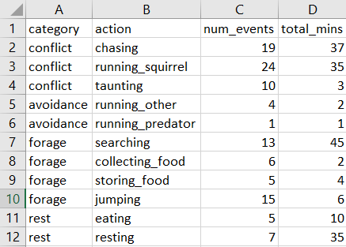
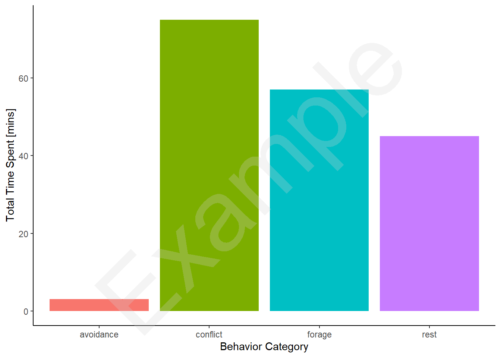
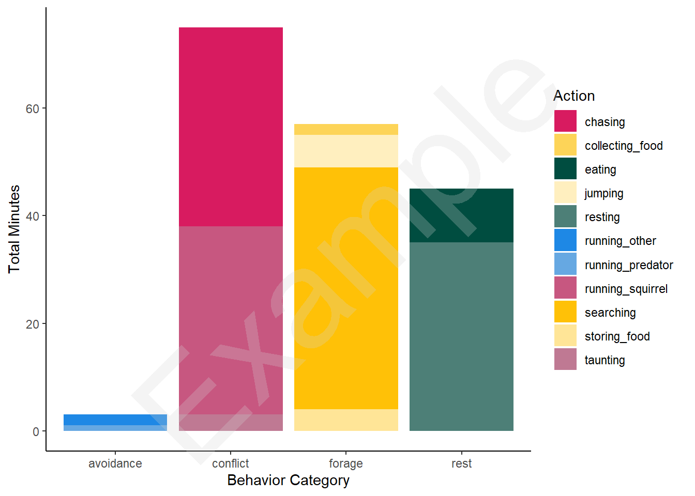
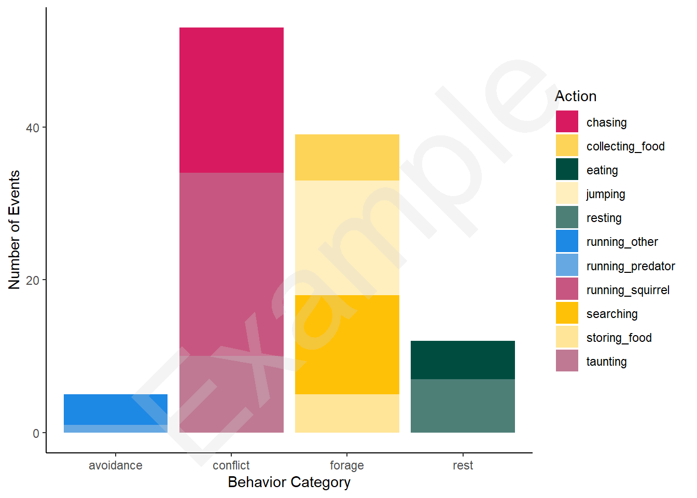
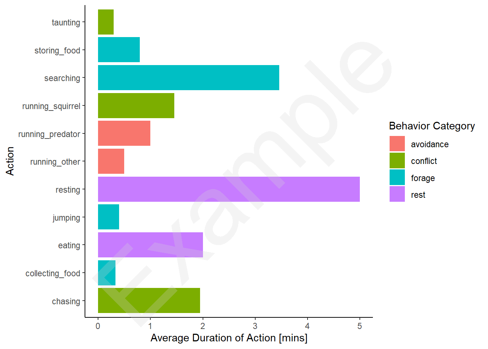

setwd('C:/Users/abart/OneDrive/Documents/UofSC/Classes/BIOL570L') #set working directory
sqdf <- read.csv('2023_WS1_ex-data.csv')Lab 1 Code
Organizing data
The first major challenge (and likely only one) will be organizing your data so that it works well with the provided code. Take the data and format it in an excel sheet. For this analysis, you should total the time spent on each action and put that as rows. You should also count the number of times each action occurred.
Here’s how my data look. Note that I made this prior to lab so I am using imaginary data:

If you want to use the code provided, you must exactly match the layout that I used here. While your data might be different R is very picky about a few things. Here’s some potential issues students might run into:
Make sure column names match exactly. R is case sensitive
Generally spaces are challenges in character vectors so use a
_instead.While our data collection sheet on paper had merged cells for behavior, in R, they must be individually represented in each row. So make sure you don’t format the excel sheet in a fancy way
Make sure to save the files as a
.csvfile. This is not the excel default. You must select ‘save as’.Save the file as a name you can find and remember!
Loading the data:
Once you have entered the data and saved it, let’s load it into R
Check out the data
If you succesfully loaded the data you should take a look at it to make sure the layout is how you want.
head(sqdf) category action num_events total_mins
1 conflict chasing 19 37
2 conflict running_squirrel 24 35
3 conflict taunting 10 3
4 avoidance running_other 4 2
5 avoidance running_predator 1 1
6 forage searching 13 45Note that here I used head(). But in reality, I typically use the View() function to take a peek at data.
Some possible issues at this step would be that your column headers are wrong or your num_events column or total_mins column are characters (they should be ‘int’). If this is the case, there is something wrong with how you formatted your excel sheet.
Graphing the data.
Let’s go ahead and make our graph. We’ll be using ggplot2 and dplyr. Remember it is standard practice to place these at the top of the script!
library(ggplot2)
library(dplyr)For the purposes of this worksheet, I’ll keep things relatively simple. Let’s plot the total time spent per behavior category. This requires pooling together across all actions. Note that your behavior categories and actions will be different than mine. However, if you formatted your columns correctly, all this code should work.
What I’m first going to do is create a new summary data.frame called sq_summary.
# summarize by category
sq_summary <- sqdf |>
group_by(category) |>
summarize(total_time = sum(total_mins))This is dplyr code and might look familiar to what we had in Week 0.
Now, we can use that code to make a quick figure. In the provided code, I’m not breaking apart each element of the figure like we did last week. However, if you are curious about learning more, I encourage you to play around with the ggplot code and see what changes!
ggplot(data = sq_summary) +
geom_bar(aes(x = category, y = total_time, fill = category),
stat = 'identity') +
scale_fill_discrete()+
labs(x = "Behavior Category", y = "Total Time Spent [mins]")+
theme_classic()+
theme(legend.position = 'none')
Statistical Analysis.
The purpose of this lab was to test if squirrels spend more time in conflict than in other activities. A great analysis to compare proportions is the chi-squared test (\(\chi^2\)). This test compares the distribution of observed values to an expected value range. The observed values in our case are the proportion of time spent on any given behavior category.
For the sake of simplicity, we will just test if the time allocations are significantly different than if the squirrel allocated time equally to all its behaviors. In R, it is one easy function to run this test. The default settings for the function require you to input your observed distribution. By default it will compare the observed values to what is expected if there was an equal distribution across all categories.
###
# Chi-squared analysis
####
chisq.test(sq_summary$total_time)
Chi-squared test for given probabilities
data: sq_summary$total_time
X-squared = 62.4, df = 3, p-value = 1.804e-13Running the chi-squared function in R will create a model object and print out some immediate results of the analysis. Here, the main result of interest is the ‘p-value’. The p-value tells us whether or not the observed and expected values are ‘statistically significantly’ different from one another. When writing your results, you should be very cautious of how/when you use the term ‘significant’. It simply means that there is a high probability the observed values are truly from a different distribution than the expected ones, in this case.
We should address some caveats with this approach. The chi-squared test simply states whether the distribution of time spent on activities is significantly different than if the squirrel were to equally allocate its time across all behaviors. With my example data, I clearly made it so that very little time is spent on avoidance. However, we can’t say from this analysis alone which category receives significantly more time spent, just that they are not evenly distributed.
Advanced Approaches
Figures
The original approach can be improved on in a few ways. First, let’s think about that figure. While it was easy to compile the data by behavior category, we smoothed over the details we recorded for individual actions. Below is code to make a similar figure but with a little more detail.
This one is a bit trickier since I have to specify the colors I want to use. I’m still making bars by behavior category but now I’m filling the colors with stacked actions. Here, I specify some colors for each action:
colors = c(
`chasing` = '#D81B60',
`running_squirrel` = '#C75780',
`taunting` = "#BF7993",
`running_other` = "#1E88E5",
`running_predator` = "#66A8E2",
`searching` = "#FFC107",
`collecting_food` = "#FDD458",
`storing_food` = "#FFE597",
`jumping` = "#FFEFBF",
`eating` = '#004D40',
`resting` = '#4D7F77'
)Now I can make the same figure but with this enhanced detail. Note that for making your figures, your actions and behavior categories will be different than this example dataset. You’ll need to modify the above color scale for different categories. In R, you can make a different color either with names ('black'). Or you could use HEX codes like I did. Just google any color pallete mixer. As a note, it’s often beneficial to consider colorblind friendly palettes to make your figures accessible to everyone!
ggplot(sqdf) +
geom_bar(aes(x = category, y = total_mins,
fill = action),
stat = 'identity', position = 'stack') +
scale_fill_manual(values = colors) +
labs(x = 'Behavior Category', y = 'Total Minutes', fill = 'Action')+
theme_classic()
While this figure isn’t perfect, I’d probably want to change the colors a bit more. It provides a good idea of how to improve this figure. Another idea, is that while time spent on a category is a great metric, we might also be interested in the number of events that each item happened.
ggplot(sqdf) +
geom_bar(aes(x = category, y = num_events,
fill = action),
stat = 'identity', position = 'stack') +
scale_fill_manual(values = colors)+
labs(x = 'Behavior Category', y = 'Number of Events', fill = 'Action')+
theme_classic()
This figure provides a different perspective than the first one. We can see that avoidance events occur more often than previously suggested while rest events are less common.
We could also look at the average duration of each event:
ggplot(sqdf) +
geom_bar(aes(x = total_mins/num_events, y = action, fill = category),
stat = 'identity')+
labs(x = "Average Duration of Action [mins]", y = "Action", fill = "Behavior Category")+
theme_classic()
As you can see, even with a fairly rudimentary dataset, we can display the information in a number of ways. Making a variety of plots can be extremely useful. First, as a researcher this is a critical step of exploratory data analysis (EDA). EDA allows us to notice major trends in our data, sometimes surprising ourselves. Additionally, we can try to think about what is the best way to communicate our findings. We want our figures to be clear to a reader who has no familiarity with our research project. The captions should be brief yet informative. When making your figures, ask your self: “What is the main message I want a reader to take away from this figure?” and then you can think about how effectively you communicate that message through the figure.
Other data analyses
In our initial analysis, we simply tested if the distribution of time allocated on one behavior category was statistically significantly different from a uniform time allocation. However, that isn’t the best test of our original hypothesis. The project plan hypothesis suggested that conflict would receive more time allocation than other categories. So let’s run the analysis but with a different “expected” distribution for our squirrel’s time allotment. In this case I’ll define a vector of an expected_model which has the proportions of time spent in my different behavior categories.
Here, I’m going to make an expected model to match my hypothsis, where a squirrel spends 5% of its time in avoidance, 40% in confilct, 30% foraging, and 25% resting.
To make these proportions, I’m matching the order to the order of my observed categories:
sq_summary$category[1] "avoidance" "conflict" "forage" "rest" You’ll have to create your own expected model to match your unique categories!
# let's say you are interested in comparing
# for unique categories
# total_observation_time <- sum(sqdf$total_mins) #total up all time observed
expected_proportions <- c(0.05,0.4,0.3,0.25)
chisq.test(x = sq_summary$total_time, p = expected_proportions)
Chi-squared test for given probabilities
data: sq_summary$total_time
X-squared = 4.2917, df = 3, p-value = 0.2316From this result, we have a p-value > 0.05. This would lead me to write a statement similar to this as a result:
“There was no significant difference between the time allocation of our observed squirrels and the expected allocations under a conflict-heavy time allocation (chi-squared test, p-value = 0.23).”
Clearly this is fabricated data but it gives a great idea of how we could extend this analysis.